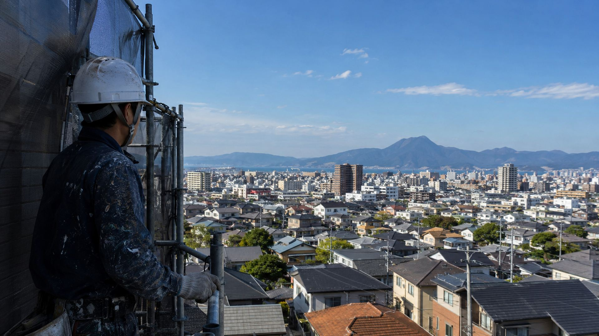

守り続けて、
47年。
大分の住まいを、
塗装の力で。
創業1979年・大分市密着の職人集団
地域に根ざした確かな技術と、誠実な施工をお約束します。
写真を送るだけでもOK
現地調査と見積もりは無料
写真を送るだけでもOK現地調査・見積もり無料
創業47年1979年（昭和54年）創業
施工実績2,000件以上住宅から施設まで対応
国家資格有資格者が施工一級塗装技能士・一級建築施工管理技士
現地調査・見積もり無料費用と工事内容を丁寧にご説明
OUR POLICY塗る前に、
塗る前に、
まず状態を見る。
外壁のひび割れ、塗膜の膨れや剥がれ。同じように見える症状でも、建物によって傷み方はさまざまです。青木塗装工業では、施工の前に建物の状態を見極め、いま必要な工事をご提案します。
- 01施工前の状態確認
見た目だけで判断せず、下地や劣化の状況を確認してから施工内容を決めます。
- 02必要な工事だけをご提案
建物の状態に合わせて、必要な工事を必要なぶんだけ。不要な工事はおすすめしません。
- 03有資格者による見極め
一級塗装技能士・一級建築施工管理技士が、状態の確認から施工まで関わります。
WORKS
すべての施工事例を見る →施工事例
仕上がりと施工前後の比較は、各事例の詳細ページでご覧いただけます。
REASON青木塗装工業が
青木塗装工業が
選ばれる理由
理由 01国家資格を持つ
国家資格を持つ
職人が対応
一級塗装技能士・一級建築施工管理技士が在籍。状態の確認から施工管理まで、有資格者が責任を持って関わります。
理由 02
必要な工事だけをご提案
建物の状態を確認し、必要な工事とその理由・費用をご説明します。不要な工事はおすすめしません。
理由 03
創業47年・大分市密着
1979年の創業以来、大分の住まいと建物に向き合ってきました。地域の気候や建物を知っているからこそ、長持ちする施工を目指します。
SERVICES対応工事
対応工事
メニュー
外壁・屋根・防水から、網戸の張替えなどの軽作業まで。住まいの困りごとに幅広く対応しています。
外壁塗装
ひび割れ補修から塗り替えまで丁寧に対応
屋根塗装
遮熱・防水効果の高い塗料で長持ちに
防水工事
屋上・ベランダ・バルコニーの防水施工
シーリング
目地・サッシ周りの防水処理
木部塗装
軒天・破風板・ウッドデッキなど
鉄部塗装
軽作業も承ります雨戸・シャッター・フェンスの錆止め塗装
網戸張替え・草刈り・高圧洗浄など
軽作業を依頼する →CONTACT塗装や防水のこと、
塗装や防水のこと、
まずはお気軽にご相談ください
✓ 気になる箇所の写真を送るだけでもOK✓ しつこい営業はいたしません✓ お見積もり・現地調査は無料